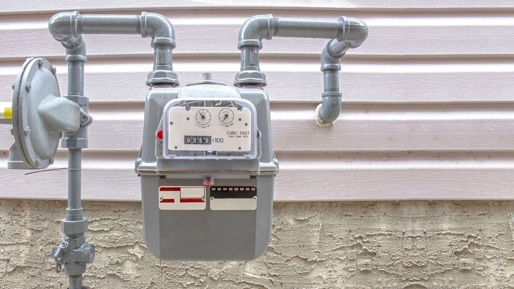
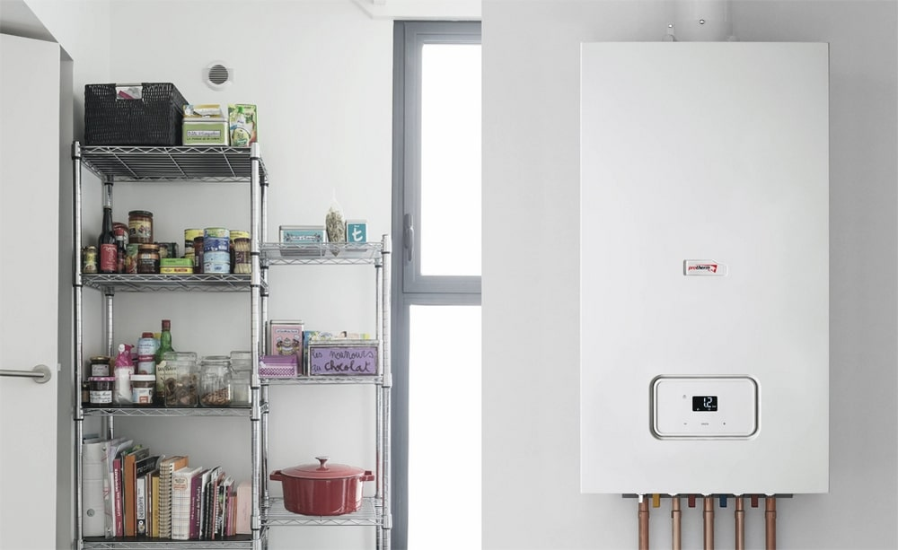
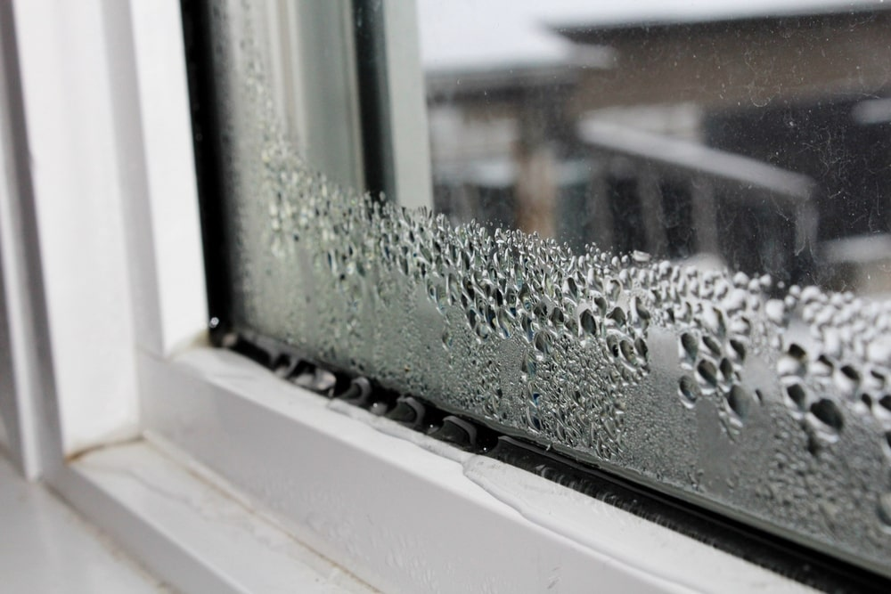
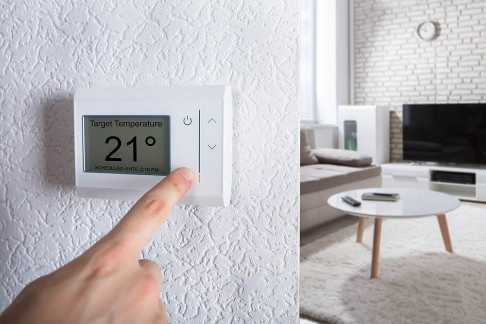
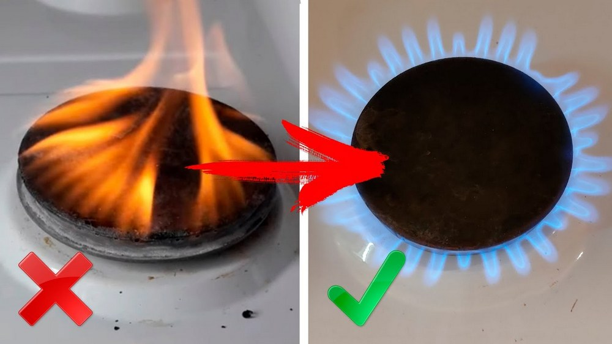

2022
Последна актуализация: преди две седмици
6 съвета, които ще намалят консумацията на газ вкъщи с около 50%

В Европа има катастрофален недостиг на газ, европейските страни вече започнаха да използват ресурса от хранилищата си. Обикновено през топлите периоди страните активно събират газ в хранилищата си и след това го използват през зимния отоплителен сезон. Но тази година не е така.
Тарифите на енергийните ресурси във връзка с недостига им растат ежедневно. Дори през топлия сезон сметките за газ са плашещи, а какво ще бъде през отоплителния сезон е страшно да си представим. Известни са само две неща: цената ще расте и следващата зима ще бъде най-скъпата за европейците досега.
Има и хубава новина: никой още не е забранил да се правят икономии. В тази статия ще разгледаме най-ефективните методи за пестене на газ, които ще намалят разходите с около 50%. Сега всеки европейски жител трябва да знае тези методи.
1. На първо място – газомер
Повечето хора имат монтиран газомер, но ако липсва такъв, замислете се за това, да си го сложите вкъщи още утре. Без него газта се изчислява според стандартите за потребление на газ, по време на криза сметките ще бъдат много скъпи по това изчисляване.
Също така описаните по-долу методи няма да работят без газомер.
2. Смяна на газовия котел с по-съвременен

Газовите котли от стар образец работят нон-стоп – газта в тях гори постоянно, или като минимум запалителя. Някои модели могат да се изключват сами и само в случаите, когато системата прегрява.
Смяната на стария газов котел с по-съвременен би било добро решение поради няколко причини:
- котелът спира да работи, когато температурата в помещението достигне зададената температура;
- запалителят не гори постоянно;
- КПД на съвременните котли е няколко пъти по-високо.
Съвременните котли консумират електричество. Ако вземем предвид, че цената на електроенергията също се е вдигнала, то сметките за енергия ще дойдат по-големи. Но икономията на газ с по-съвременно оборудване може да достигне до 20% и представлява печеливша покупка.
Важно: всеки котел трябва да се поддържа в добро състояние, да се почиства от сажди и прах – дори 1 мм котлен камък вътре в него значително намалява КПД.
3. Битът обича газта
Ако чайникът в къщи се топли на газова печка – трябва задължително да го почиствате от котлен камък със специални средства. Покритието влошава топлопроводимостта около 30 пъти, което не само че увеличава консумацията на газ, но и краде от времето.
Също така, готвенето със затворен капак ще спести 15% газ от необходимия за готвенето. Взимайте тенджери и тигани с дебело и равномерно дъно, което ще осигури равномерно и бързо загряване. Освен това дъното на съда трябва да съответства на диаметъра на горелката.
Ако газовият котел отговаря за топлата вода във вашия дом – време е да помислите за това, по-малко да се къпете във вана. В края на месеца сметката за газта ще дойде много по-малка.
4. Лоши прозорци – загуба на 25% от топлината

Често информацията, че една четвърт от топлината в къщата през студения сезон излиза през прозорците, е изненадваща за хората. Ако на прозорците в къщата са поставени единични стъклопакети и фитинги с ниско качество – струва си да се замислите за тяхната подмяна. Хубавите прозорци са скъпи, така че можете да тръгнете по друг път:
- разглобете касите;
- разглобете первазите на прозореца;
- хубаво минете с монтажна пяна по всички отвори;
- сложете изолация;
- сменете уплътнителните гумички, ако е необходимо.
Можете да проверите качеството на извършената работа със запалена свещ: Поднесете я към прозореца и проверете дали пламъкът трепти.
5. Поставяне на термостат

Термостатът контролира климата вътре в къщата автоматично, т.е. ако 20 градуса топлина са ви достатъчни, ще се поддържа тази температура.
По-сложните термостати сами сменят температурата в зависимост от това дали е ден или нощ. През нощта можете да зададете една температура, а през деня, когато всички са на работа, друга.
Тези технологии позволяват да се спести около 10% газ.
6. Използваме газта на целите 100%”

Много хора са забелязали, че газта гори по различен начин: един ден има жълтеникави нюанси, на другия ден пламъкът на горелката, усилена до максимум, е по-малък от обикновено. Заедно с това в стаята понякога може да се чувства миризма на газ.
Това се дължи на факта, че газта изминава дълъг път до потребителя по газопровода, като претърпява различни промени в температурата, налягането и тръбите с различно напречно сечение. Такива тестове не са от полза за енергийния носител: газовите молекули се събират в плътни групи, изместват кислорода, поради което метанът не може напълно да изгори. По същите тези причини структурните елементи на газовото оборудване, по-специално горелките, се замърсяват със сажди.
Този проблем е забелязан отдавна, но никой не се е занимавал с него. Когато започна кризата в европейските страни, инженерите на първо място обърнаха внимание на това. В хода на изследванията инженерите установиха, че може да се повлияе върху молекулите на газта, съответно, и върху самия процес на горене. Така беше създаден спестителя на газ Smart Gas Saver.
Smart Gas Saver е оборудван с два мощни неодимови магнита, през които преминава газта. В поляризиращото поле газовите частици се разпадат на по-малки групи, след което напълно се разпръскват. След преминаване през магнитното поле молекулите CH4 се подреждат и след това попадат в горивната камера. Благодарение на този процес газта изгаря напълно и генерирането на топлина се увеличава с няколко пъти.
Smart Gas Saver едва започва да набира популярност в Европа, така че почти е невъзможно да намерите този уред в магазините. Можете да го поръчате само онлайн от сайта на производителя. До производителят продава старата партида с 50% намаление. Броят на уредите с намаление е ограничен. Така че, ако сте планирали да си го купите, сега е моментът.
Последният съвет е най-практичен
След слагането на измервателния уред монтажа на спестителя на газ Smart Gas Saver е задължителен!
Ако си сложите Smart Gas Saver, то първите 5 съвета можете да ги пропуснете. И така ще идват малки сметки
Съгласен съм относно чайника! Цяла вечност минава докато се загрее, когато има котлен камък, особено ако грееш 3 литра
Съвременните котли не спестяват толкова много, мога да ви кажа, но струват много скъпо. Сложих си спестител Smart Gas Saver – консумацията на газ намаляя почти наполовина. Не мога да му се нарадвам
Това, че може да се спести газ с помощта на магнити не е ли някаква измама???
Не, в началото и аз така си мислех, прочетох много форуми и статии по тази тема. Не е измама, просто много фалшификати се продават, оттук излиза целият този негатив и оплюване на работата му.
Последният съвет е най-хубав! Благодаря на авторите на статията, и за това, че са оставили линк. Не е толкова лесно да се намери този Smart Gas Saver, поръчах го от този линк. Отгоре на всичко попаднах и на много добро намаление! Сложих го сама)
Всички само за този спестител на газ Smart Gas Saver говорят. Няколко познати ми препоръчаха да си го сложа. Сега със сигурност ще си го купя
През студения период, колкото и да изолирате къщите и каквито и котли да слагате, сметките все ще бъдат големи. Виждали ли сте цените на газта? Това е ненормално.
Разбира се, че е ненормално, но трябва по някакъв начин да го преживеем. На първо място, забраних на моите да си взимат вани всеки ден, след това сложих нова дръжка на душа, и после сложих два спестителя: на печката и газовия бойлер. Идват такива сметки, все едно няма никаква криза.
Моите роднини имат такъв спестител на газ на тръбата си, много време се чудех, какво е това. Предполагах дори, че те по този начин са запушили дупка в тръбата))) Сега вече разбрах, какво е това нещо
1, 4 и 5 съвет са най-добри, препоръчвам ви да им обърнете внимание
Първата полезна статия от всичките, които прочетох. Петата точка за мен беше нещо ново.